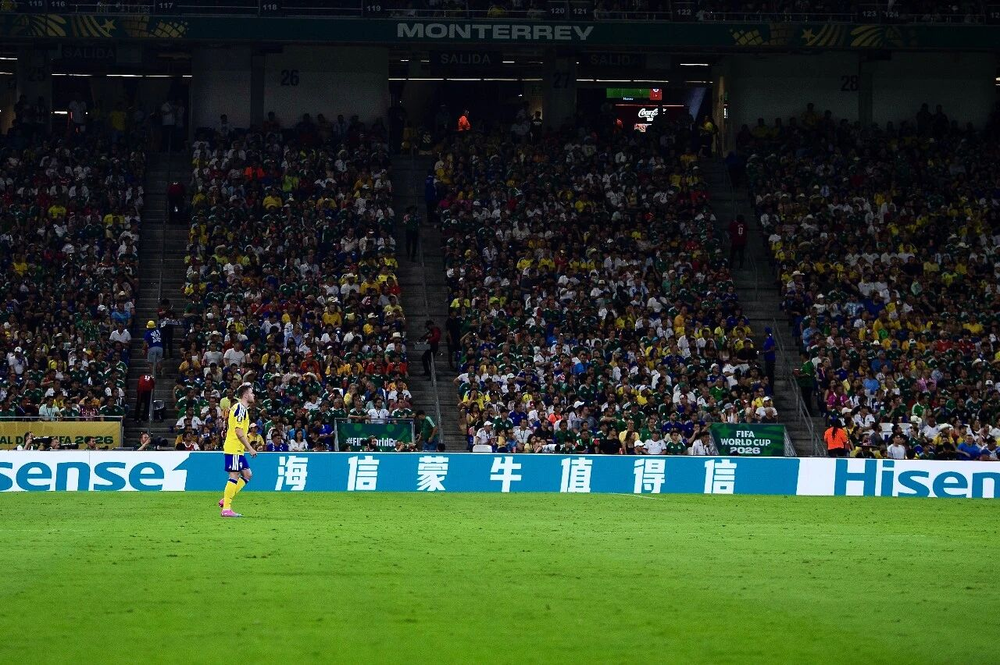
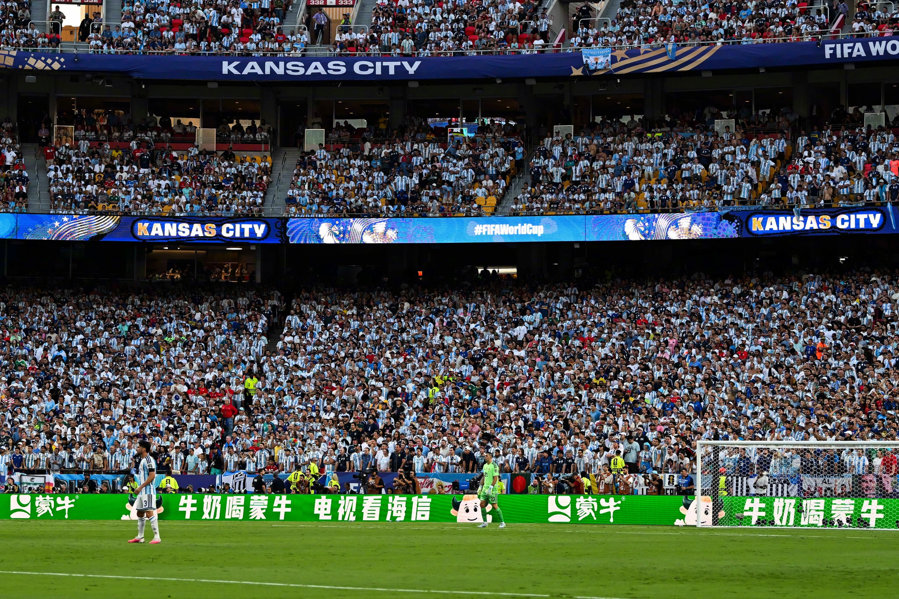
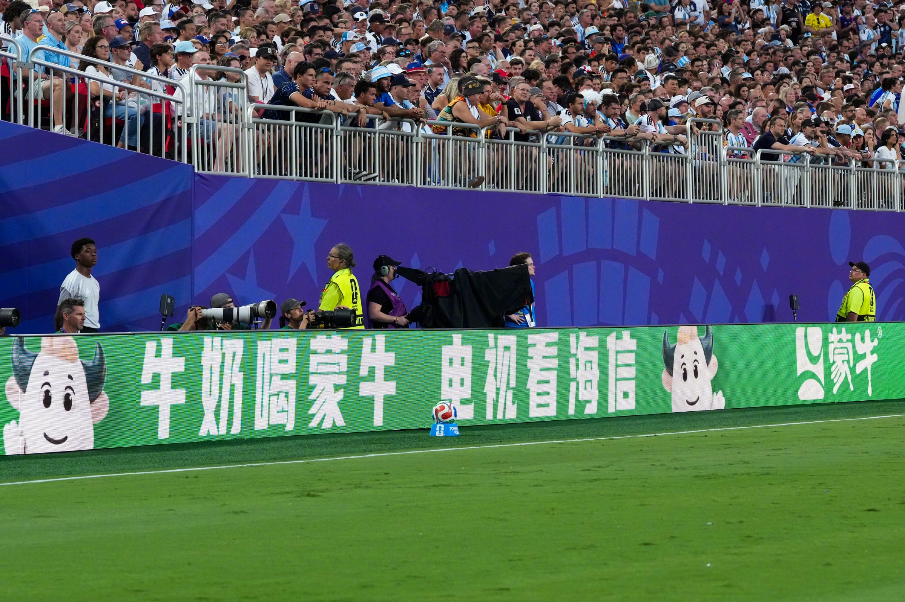
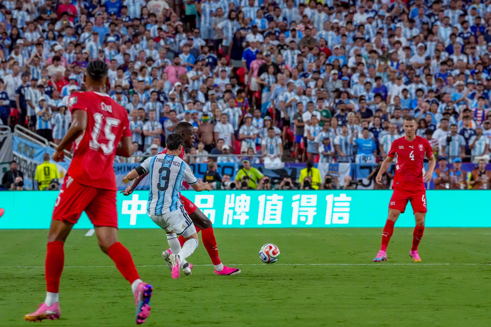
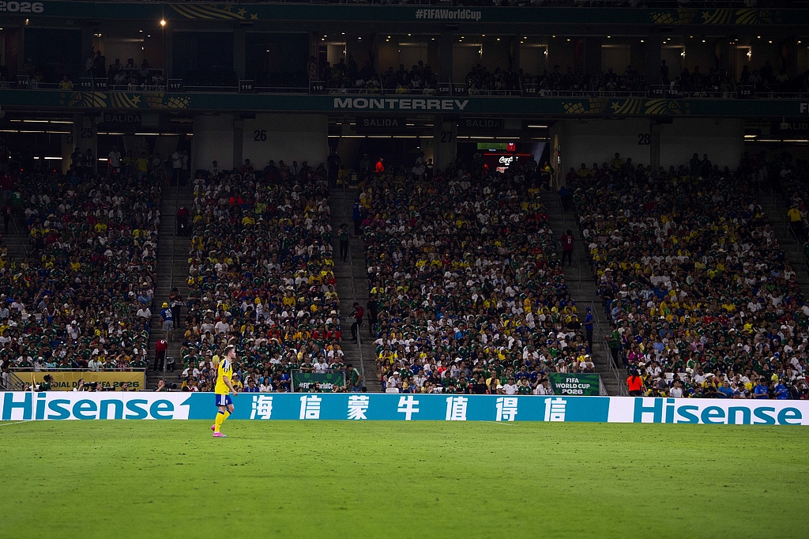

一句话创意
两家官方赞助商不再各说各话，而是把彼此品牌名写进自家围挡文案；用户自发命名“山蒙海誓”后，再用 2.0 文案和社交内容把一次转播同框做成连续剧情。
案例为什么成立
这个案例不应只被记成““山蒙海誓”把内蒙古草原与海信所在的青岛海滨、两个品牌名称及“山盟海誓”谐音压缩在四个字里；围挡两句文案则提供了无需解释的第一幕。”。它的成立顺序是：先利用“中国品牌在全球顶级赛场并肩出现的自豪感、两家品牌像 CP 一样互相回应的意外感，以及网友参与命名和等待续集的追剧感。”建立注意力，再以“两家 FIFA 世界杯全球官方赞助商共创”或品牌已有资源获得进入资格，最后通过“5 月用牛蒙蒙与海信哈利预告合作；6 月 15 日 1.0 围挡打出“蒙牛海信就是牛 / 海信蒙牛值得信”，蒙牛官方微博使用 #山蒙海誓# 并以世界杯周边抽奖承接；用户与媒体扩散 CP 梗；7 月 12 日 2.0 升级为“牛奶喝蒙牛，电视看海信 / 中国品牌就是牛，中国品牌值得信”；海信官方账号、其他中国品牌和媒体继续接棒。人民网 7 月 15 日的报道将该话题概括为“数次登上热搜”；本站同时保留微博实时热点页，能直接确认至少一次榜单留存，但不虚构具体名次与在榜时长。”把情绪接回品牌。真正需要复盘的是权益、动作和品牌意义是否连成同一条链。
战役节奏
进入资格：确认可合法调用的资源与边界——两家 FIFA 世界杯全球官方赞助商共创。
情绪触发：围绕“中国品牌在全球顶级赛场并肩出现的自豪感、两家品牌像 CP 一样互相回应的意外感，以及网友参与命名和等待续集的追剧感。”选择最适合的比赛、人群或文化节点。
整合执行：把核心创意扩展为内容、媒介、渠道和用户动作——5 月用牛蒙蒙与海信哈利预告合作；6 月 15 日 1.0 围挡打出“蒙牛海信就是牛 / 海信蒙牛值得信”，蒙牛官方微博使用 #山蒙海誓# 并以世界杯周边抽奖承接；用户与媒体扩散 CP 梗；7 月 12 日 2.0 升级为“牛奶喝蒙牛，电视看海信 / 中国品牌就是牛，中国品牌值得信”；海信官方账号、其他中国品牌和媒体继续接棒。人民网 7 月 15 日的报道将该话题概括为“数次登上热搜”；本站同时保留微博实时热点页，能直接确认至少一次榜单留存，但不虚构具体名次与在榜时长。。
资产沉淀：用““山蒙海誓”把内蒙古草原与海信所在的青岛海滨、两个品牌名称及“山盟海誓”谐音压缩在四个字里；围挡两句文案则提供了无需解释的第一幕。”作为赛后仍能被复述的品牌记忆。
评估时不能漏掉什么
资格与相关性：用户能否理解品牌为何出现在这项赛事中。
内容与媒介：核心创意是否在不同触点保持同一识别线索。
参与与业务：是否产生观看之外的搜索、互动、到店、购买或会员行为。
长期资产：赛后品牌记忆、项目关联度和可复用内容是否留下。
真实案例物料
以下图片均保留原始发布身份或由权威媒体明确标注原始出处；每张图可点击来源核验。






情绪如何与品牌发生关系
中国品牌在全球顶级赛场并肩出现的自豪感、两家品牌像 CP 一样互相回应的意外感，以及网友参与命名和等待续集的追剧感。
“牛”“信”来自两个品牌名称，“喝牛奶 / 看电视”又对应家庭观赛的互补动作；因此联名既有中文双关，也有具体使用场景，不是任意两个 Logo 的拼接。
整合战役结构
5 月用牛蒙蒙与海信哈利预告合作；6 月 15 日 1.0 围挡打出“蒙牛海信就是牛 / 海信蒙牛值得信”，蒙牛官方微博使用 #山蒙海誓# 并以世界杯周边抽奖承接；用户与媒体扩散 CP 梗；7 月 12 日 2.0 升级为“牛奶喝蒙牛，电视看海信 / 中国品牌就是牛，中国品牌值得信”；海信官方账号、其他中国品牌和媒体继续接棒。人民网 7 月 15 日的报道将该话题概括为“数次登上热搜”；本站同时保留微博实时热点页，能直接确认至少一次榜单留存，但不虚构具体名次与在榜时长。
真正值得迁移的方法
风险与不可照搬之处
案例信息与来源
全球转播 / 中国社交平台
两家 FIFA 世界杯全球官方赞助商共创
赞助商共创型；品牌互文型；用户造梗接棒型；续集运营型
- 蒙牛官网 · 2026-06-15就是牛、值得信！中国品牌在一起
- 蒙牛乳业官方微博（新浪新闻留存） · 2026-06-15牛蒙蒙和哈利正式碰头：#山蒙海誓#
- 海信电视官方微博 · 2026-07-12#山蒙海誓CP又有了续集#
- 新浪热点官方微博 · 2026-07-12山蒙海誓 CP 又有了续集：2.0 围挡现场图组
- 人民网 · 2026-07-15蒙牛携手海信再次进行世界杯围挡广告互动
- 微博实时热点留存 · 2026-07-12#山蒙海誓CP又有了续集# 进入实时热点列表
来源按品牌/官方发布、官方账号留存、权威媒体、获奖案例库分层记录；品牌与奖项自报结果不视作独立审计。